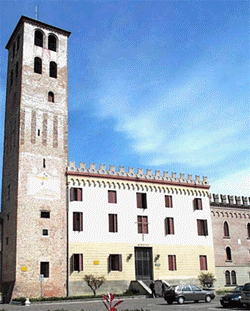

Palazzo Tiso, attualmente sede municipale, costituiva originariamente la dimora dei feudatari e parte integrante di un castello medioevale dotato di un sistema fortificato, di cui nulla rimane. Venne costruito nel 1085 per volere di Tiso III e Gherardo II Da Camposampiero. Di aspetto severo e maestoso, l’edificio attuale è il risultato dalle numerose modifiche apportate nel corso dei secoli. In origine era attrezzato con porte munite di torri, circondato da una cintura di fossa ricavata dallo sdoppiamento del fiume Vandura e reso più sicuro da argini, ponti levatoi, catene di sbarramento e mura. Il recinto interno, avente forma di quadrato con gli angoli smussati, comprendeva, oltre alla rocca, il campo di Marte, depositi, caserme e poche abitazioni. La facciata attuale è divisa in due zone distinte: quella inferiore con riproduzione a lastroni di pietra; quella superiore scandita da ampie aperture sormontata da una serie di archetti pensili acuti, su cui si posa un coronamento, risalente all’inizio del secolo scorso, che imita la merlatura medioevale.
Palazzo Tiso, currently the town hall, was originally the residence of the feudal lords and part of a medieval castle with fortifications, of which nothing remains. It was built in 1085 at the behest of Tiso III and Gherardo II da Camposampiero. With a stern and majestic appearance, the current building is the result of numerous changes made over the centuries. Originally it was equipped with gates flanked by towers, surrounded by a moat formed by splitting the Vandura river, and made more secure by embankments, drawbridges, chains, and walls. The interior enclosure, square in shape with truncated corners, included, besides the fortress itself, the “Campo di Marte” (military drill ground), storage rooms, barracks, and a few residences. The current façade is divided into two distinct sections: the lower one with stone slab reproductions; the upper one featuring wide openings surmounted by a series of pointed hanging arches, on which rests a crown (added at the beginning of the 20th century) that resembles medieval battlements.
L’eco degli importanti avvenimenti di cui Palazzo Tiso fu testimone nei secoli risuona ancora distinto nella Torre Civica che svetta al suo fianco. È alta trentadue metri ed ha una pianta quadrata leggermente irregolare (metri 6.00 x 6,50). Oltre a mattoni d’argilla, per la sua costruzione venne utilizzato abbondante materiale di ripiego. Intorno al 1600 venne adattata la parte superiore. La bella campana bronzea, risalente al 1556 ora sostituita da una copia, è conservata e visibile all’interno di Palazzo Tiso. Da notare, sul lato sud, una meridiana policroma con scritta latina, due stemmi d’epoca veneziana e, quasi alla sommità, un dipinto di Fulvio Pendini del 1962, raffigurante una Madonna con Bambino

The echo of the important events that Palazzo Tiso witnessed over the centuries still resonates clearly in the Civic Tower that stands beside it. It is 32 metres high and has a slightly irregular square plan (6.00 × 6.50 meters). In addition to clay bricks, abundant reused materials were used for its construction. Around the year 1600, the upper part was adapted. The beautiful bronze bell, dating from 1556, now replaced by a replica, is preserved and visible inside Palazzo Tiso. On the south side a polychrome sundial with a Latin inscription can be seen, along with two coats of arms from the Venetian period, and, near the top, a 1962 painting by Fulvio Pendini depicting the Madonna and Child.